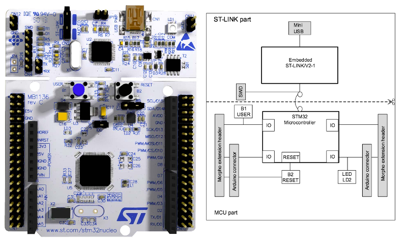
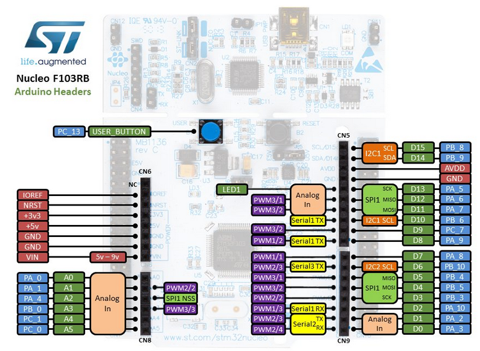
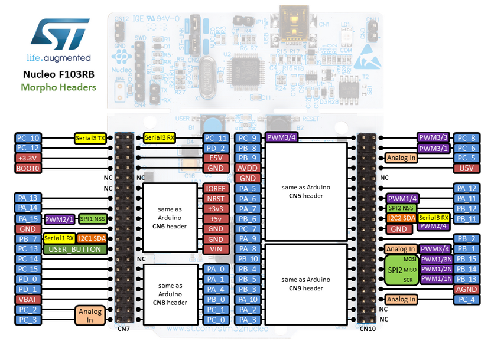
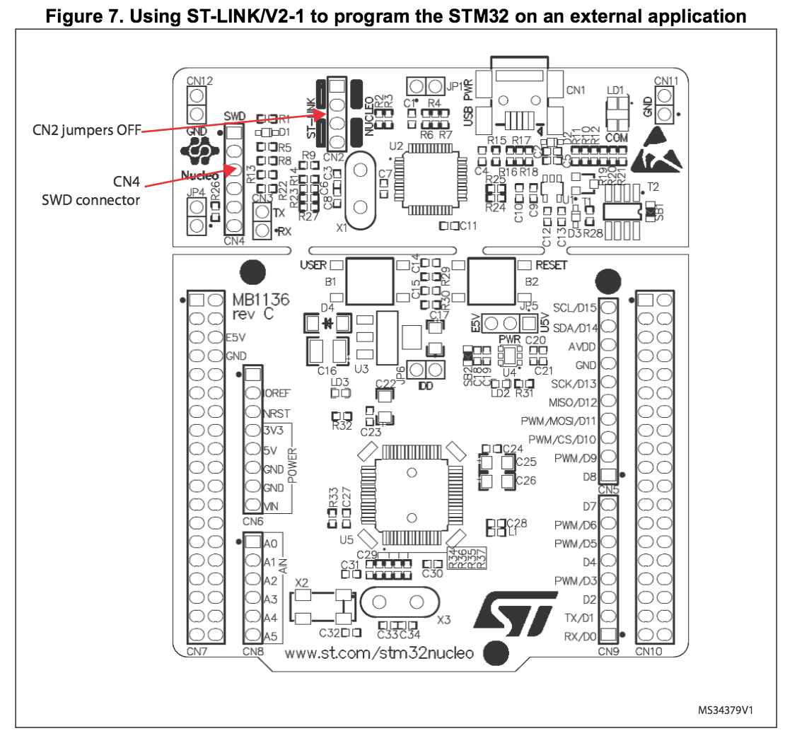
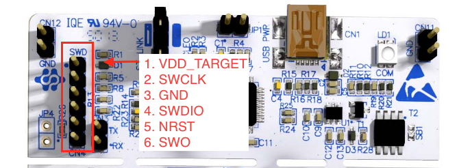
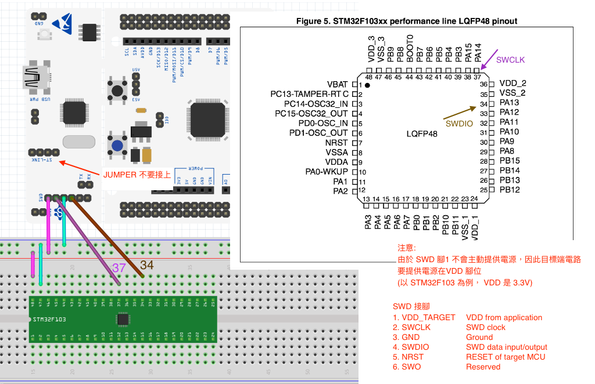
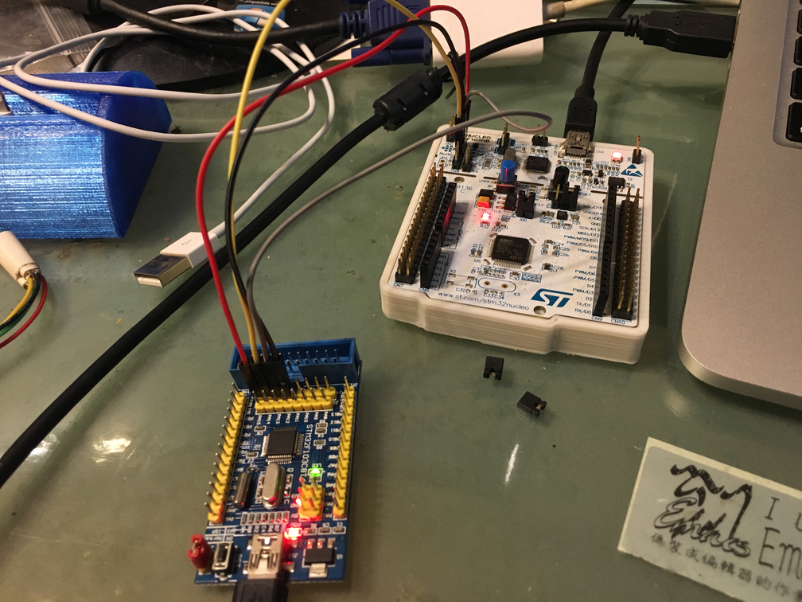

了解了如何透過 mbed 線上 IDE 將程式燒錄到你的 NUCLEO 開發版後，我們需要知道自 己開發板的硬體，這樣才能夠加快開發的速度。
在這邊我一樣是使用我的 NUCLEO-F103RB 來作為範例，但是依照 STMicroelectronics 的設計，這一系 列 NUCLEO 的開發版至少在 mbed 上的封裝會是相同的
(大概，自己在玩時要確認一下自己的開發板的 IO)。
要了解 NUCLEO 開發版要看哪個文件呢？答案就是 UM1724: STM32 Nucleo-64 boards 這 一份文件啦 ~ 這份文件包含了這一系列 NUCLEO 開發版的腳位資訊以及一些電路圖，就 讓我們來看看比較重要的地方吧！
基本硬體認識
你手上的 NUCLEO 應該是長得如下圖左的那個樣子，看起來不小心就會折斷變成兩片板子。 實際上他的確是被設計成可以區分兩個區塊，上面那個區塊放的是 STMicroelectronics 的燒錄器 ST-LINK ，而下方則是我們的核心板。

STMicroelectronics 之所以會刻意把他弄的好像可以折斷的樣子，我猜是因為這樣可以 很好一眼分出哪一區塊的用途是什麼，另外則是……其實他真的可以折斷。（我是不會這 樣做就是囉 ~)
不過其實能不能把這片板子分成兩塊根本不重要，我們要看的是他的 IO，因為我們玩一塊 開發版的目的都是在用他提供的周邊以及 IO 而已。 NUCLEO 的腳位可以分為兩種，一種是 Arduino 相容腳位，用讓來你可以輕鬆和 Arduino 的擴充版進行連接，另外一種則是他們自 己定義的 Morpho 擴展排針 。
完整的腳位資訊你一定要看 UM1724: STM32 Nucleo-64 boards 這份文件，這邊我以 mbed 網站的 ST_Nucleo-F103RB 為主來進行描述。
Arduino 相容腳位 (Arduino Connector)
這邊的 IO 顧名思義就是要讓你可以做到 Arduino 可以做到的事情，也因此在 NUCLEO 上面使用 Arduino 的擴展板是有可能的，當然你也可以按照自己的需求去調整這些 IO 的用途。

Morpho 擴展排針 (Morpho extension header)
Morpho extension header 則是由 STMicroelectronics 自己定義的腳位，這裡的目的是為了可以盡 可能的榨乾這顆 CPU 所有的腳位，畢竟我們的 CPU 是 64 隻腳的封裝，要是只能輸出 Arduino 那樣數量的接腳不就太可惜了嗎。
(雖然我相信所有 NUCLEO 系列接腳都相容，不過開發時還是要自己注意一下)

使用 NUCLEO 燒錄 STM32 CPU
前面我說到了 NUCLEO 這塊板子是可以折斷的這是真的，如果你有興趣可以看看 UM1724: STM32 Nucleo-64 boards 這份文件，不過讓我們注意如何使用 NUCLEO 這塊板子來燒錄 其他的 STM32 CPU 吧。(這也是這一系列的賣點，買了以後你就有 STM32 的燒錄器)
當然如果你真的非折斷他不可，我建議你把文件翻熟一點，然後看看先人做的典範再來決定 是否要這樣作: How to reconnect nucleo to st-link part?
NUCLEO 提供的 STLINK 除了可以燒錄該開發板上的 CPU 外，我們也可以透過他的 SWD
接口來燒錄外部的 CPU，但要進行這件事情前，你必須把 CN2 的 短路座(jumpers) 給 移除 。

移除 CN2 的短路座後，我們就可以透過 CN4 (SWD connector) 來進行燒錄，讓我們來看看
這邊的腳位排列

要注意到這邊的 VDD_TARGET 實際上是不會提供電源的，這是因為他會偵測目標端的電源
(微控器依據產品線的不同，VDD 的電壓在 1.8V ~ 5V 之間根據產品而變），因此你的目標端
CPU 必須提供電源才行，以連接 STM32F103 CPU 為例，連接的線路是這樣的

我手邊剛好有一片以前買的 STM32F103C8T6 核心板 可以拿來測試，接線後變成這樣子:

然後我們就可以試著透過 stlink 進行燒錄，將用 mbed 線上 IDE 產生出來的映像檔燒錄到外部 CPU 去
coldnew@Rosia ~ $ st-flash write Nucleo_blink_led_NUCLEO_F103RB.bin 0x8000000 2015-11-30T19:40:08 INFO src/stlink-common.c: Loading device parameters.... 2015-11-30T19:40:08 INFO src/stlink-common.c: Device connected is: F1 Medium-density device, id 0x20036410 2015-11-30T19:40:08 INFO src/stlink-common.c: SRAM size: 0x5000 bytes (20 KiB), Flash: 0x10000 bytes (64 KiB) in pages of 1024 bytes 2015-11-30T19:40:08 INFO src/stlink-common.c: Attempting to write 15192 (0x3b58) bytes to stm32 address: 134217728 (0x8000000) Flash page at addr: 0x08003800 erased 2015-11-30T19:40:08 INFO src/stlink-common.c: Finished erasing 15 pages of 1024 (0x400) bytes 2015-11-30T19:40:08 INFO src/stlink-common.c: Starting Flash write for VL/F0/F3 core id 2015-11-30T19:40:08 INFO src/stlink-common.c: Successfully loaded flash loader in sram 14/14 pages written 2015-11-30T19:40:09 INFO src/stlink-common.c: Starting verification of write complete 2015-11-30T19:40:09 INFO src/stlink-common.c: Flash written and verified! jolly good!
實測結果是可以正常燒錄並使用，雖然這樣可以燒錄，但是似乎就不能透過 拖曳 的功能來
進行燒錄了….
除了 STM32 系列的 CPU 外，你也可以透過 SWD 接口燒錄其他 ARM 微控器，這邊有使用 NUCLEO 燒錄 NXP 的 LPC810 的範例： Picos ARM – LPC810 SWD / JTAG with Nucleo STM32